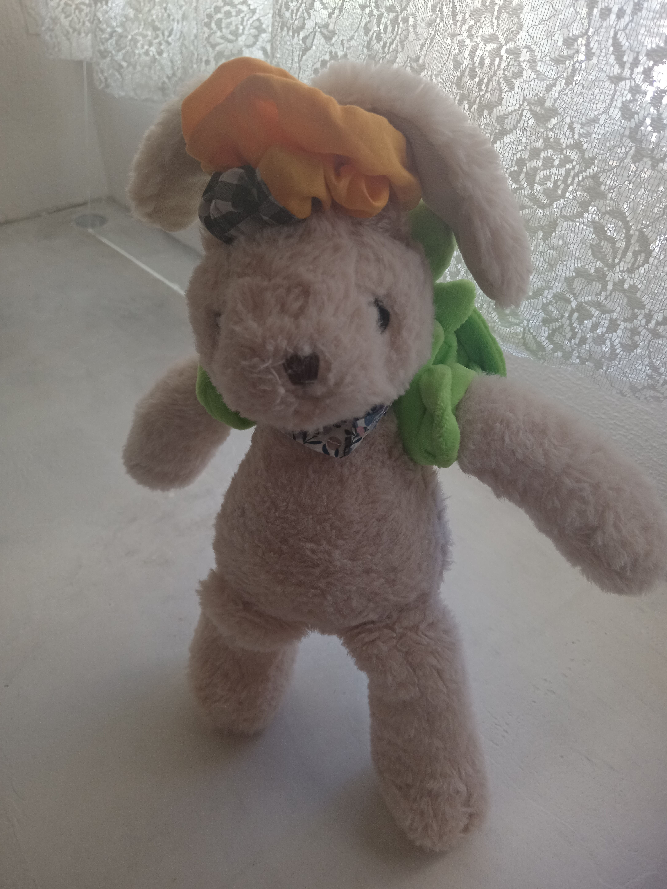
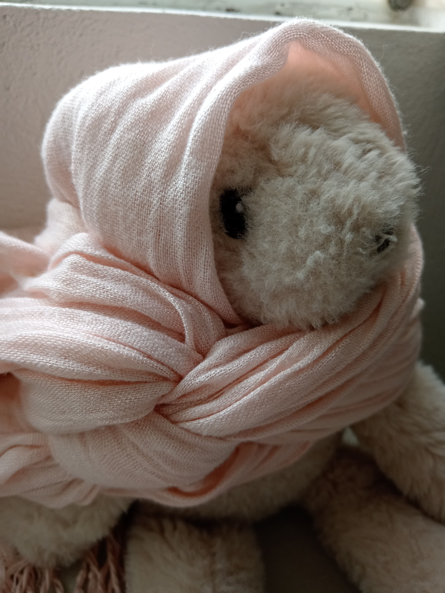
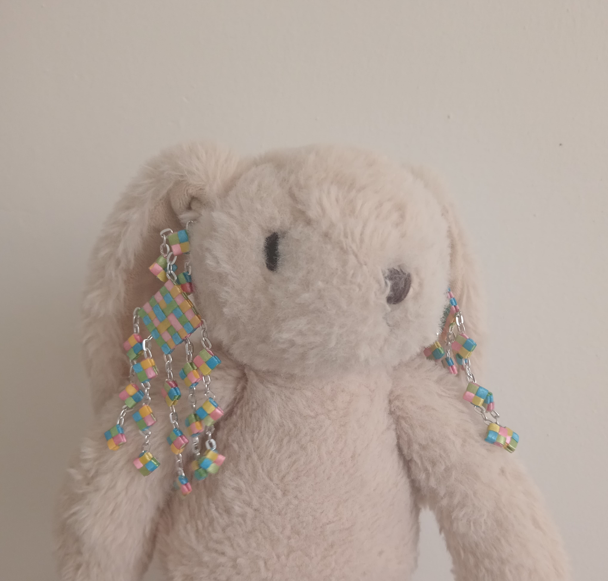
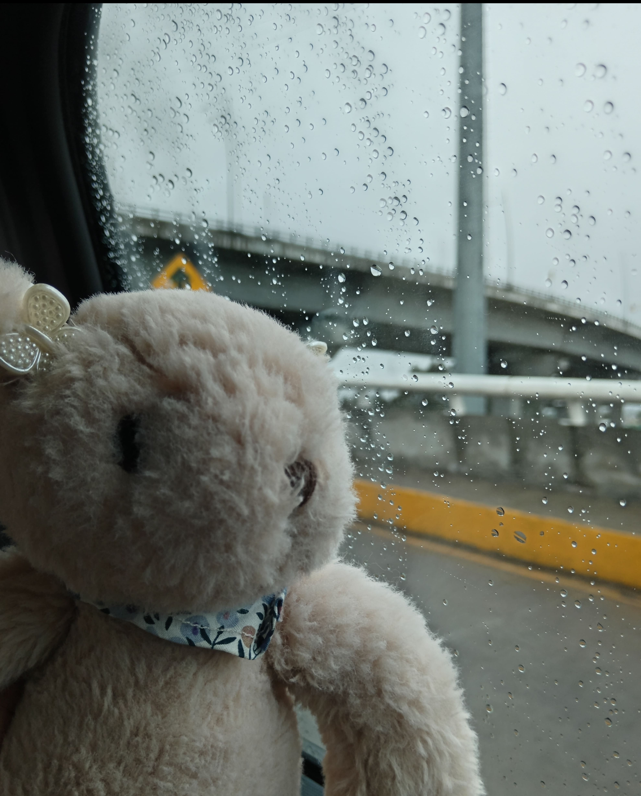
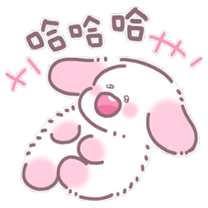

Imagenes
Los conejos fueron adoptados en la vida urbana como mascotas por sus encantos y por características que se adaptan a la vida cotidiana. Pero ¿cómo podemos saber si están realmente felices? Hay algunos indicadores a tener en cuenta para determinar su bienestar o mejorarlo para alcanzar una convivencia saludable.
Imagenes
Tranquilidad es un estado que el ser humano consigue estando internamente sereno en un marco apacible. Un entorno tranquilo transmite paz, así como estar en armonía con uno mismo y alcanzar un sano equilibrio entre mente, cuerpo y espíritu genera bienestar y plenitud. La tranquilidad es primordial y beneficiosa en cada etapa de nuestra existencia. Los bebés y los niños la necesitan para crecer y desarrollarse con contención emocional, seguridad y calma; a los jóvenes los ayuda a no desbordarse en periodos de crisis en los cuales los atormenta el nerviosismo o la ansiedad y a los adultos les permite combatir el estrés y preservar la salud mental.Por fortuna existen múltiples fuentes de tranquilidad, razón por la cual cada sujeto tiene la posibilidad de buscarla y conseguirla de numerosas maneras en función de sus preferencias, necesidades y estilo de vida. Es sumamente valioso y enriquecedor tener espacios de tranquilidad a diario. En un mundo que nos empuja a seguir un ritmo vertiginoso para hacerle frente a compromisos, responsabilidades y obligaciones cotidianas parece imposible apretar el freno y encontrar instantes de sosiego. Pero sí hay que aprender a desconectarnos por un rato de todo aquello que nos pesa, estresa o preocupa y disfrutar ratos de ocio reservando momentos para el tiempo libre, el esparcimiento y el relax sin estar pendientes de ningún dispositivo tecnológico. Para minimizar el riesgo de padecer enfermedades es vital el descanso, por ejemplo.
Imagenes
El cepillado es importante, especialmente durante el período de muda, para evitar enredos y mantener el pelaje sano. Descubre qué tipo de cepillo es mejor para tu raza de conejo. Algunos conejos necesitan un cepillado minucioso, ¡especialmente durante el período de muda! Los conejos de pelo corto necesitan ser cepillados especialmente cuando están mudando. Los conejos de pelo largo siempre deben cepillarse regularmente porque su pelaje se enreda fácilmente. ¡Prevenir enredos es mucho más placentero para ti y tu conejo que solucionarlos! Un peine y un cepillo suave son ideales para cepillar conejos. Durante la sesión diaria de abrazos, puedes usar tus manos para revisar el pelaje en busca de enredos. Si sientes uno, agárralo inmediatamente para evitar que empeore. No olvide el trasero y la cola, donde el pelaje a menudo se enreda rápidamente. Tenga cuidado con la cola.
A veces puede ser una ventaja cortar las razas de conejos de pelo largo una vez cada dos meses. Puedes hacerlo tú mismo con unas tijeras especiales para conejos o encargarlo en una peluquería para conejos. Presta atención al rostro e infórmate bien de lo corto que puedes cortar el pelaje. Si corta el pelaje demasiado corto o incorrectamente, pueden surgir problemas con el pelaje. A los conejos generalmente les gusta menos que los carguen, pero sí les gustan las caricias. Aprenda a interactuar con los conejos de manera respetuosa, teniendo en cuenta sus personalidades individuales. El conejo es una especie muy frecuente como animal de compañía. Debido a este éxito en los hogares, han ido surgiendo diferentes razas a base de cruces, buscando diferentes tamaños y tipos de pelaje.
Imagenes
Los conejos son herbívoros y necesitan una dieta rica en fibra. El heno constituye la base de su dieta y debe estar disponible en todo momento. Descubra cómo proporcionar una dieta equilibrada que satisfaga las necesidades nutricionales de su conejo. Un conejo es herbívoro, lo que significa herbívoro. Por lo tanto, los conejos necesitan alimentos de origen vegetal con mucha fibra. La mejor fuente de fibra es el heno . Por lo tanto, dale siempre a tu conejo suficiente heno. Un buen punto de referencia es dar un mechón de heno al día del mismo tamaño que el propio conejo. Tanto el heno como la paja contienen fibra, pero la paja casi no tiene valor nutricional, por lo que siempre se prefiere el heno.

Imagenes con filtro
Tener un conejo es tener a un pequeñin con brotes de locura, en un momento puede estar de lo más tranquilo y al otro segundo corre como si fuera un meteorito cayendo del cielo.
Imagenes GIF
Los conejos felices son exploradores naturales, les gusta investigar y descubrir los rincones desconocidos en su entorno. Al dar un espacio seguro para que exploren se estimula su felicidad general. Para descifrar las señales de felicidad en un conejo es importante observar su comportamiento, su alimentación, el confort, sus interacciones y los hábitos de cuidado personal.
